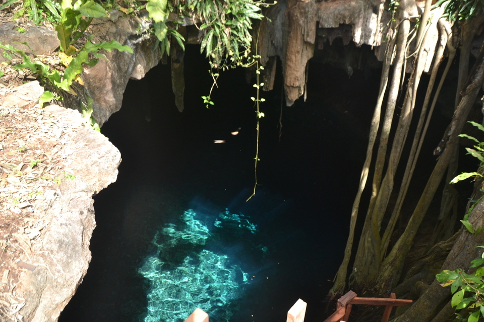
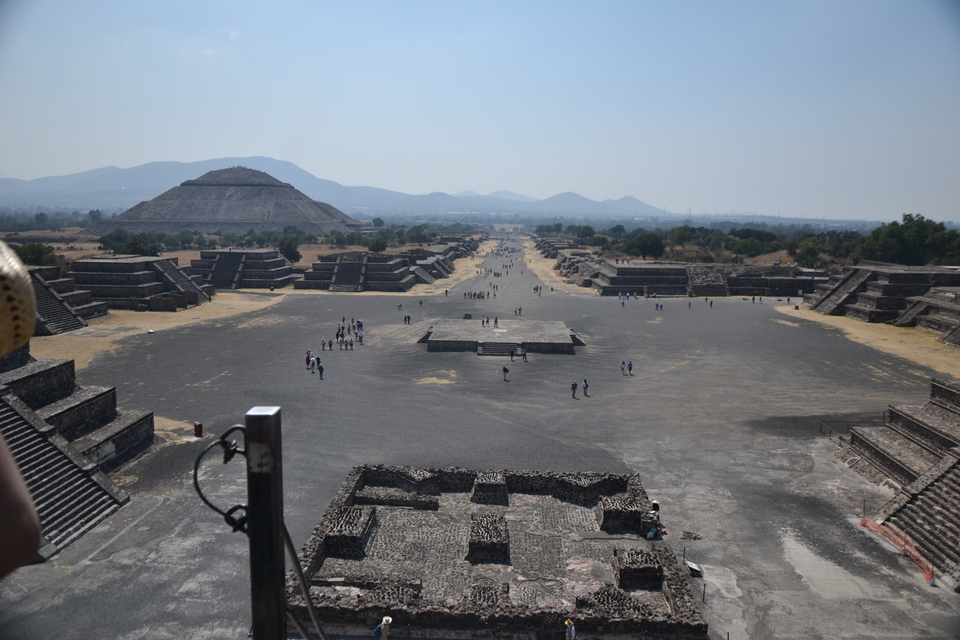

LE MEXIQUE
Eloigné de près de 9200km de la France, ce pays est considéré comme
l'un des pays les plus dangereux
agréable a visiter.
Je suis arrivé dans la premiere ville aprés un an de préparation (oui, un an! Mais quatre mois de voyage a l'autre bout du monde ne ce prépare pas en deux jours)
voici la liste d'une partie des principales villes que j'ai visité:
-
Valladolid
Première Cenote et premier gros kiff
 -
Chichen Itza
Mon tout premier site archéologique, une pure merveille

-
Le Musée anthropologique
Le plus grand musée anthropologique du monde, il m'a fallut 2 jours pour le visiter

-
Téotihuacan
Mon second site archéologique sur les civilisation amérindienne
 -
Mazunté / Zippolite
Ces deux petite villes côtiere ne sont séparées que par une petite colline et dix minutes de marche

Ce n'est que le début du voyage, car il y a bien des millions de choses à raconter sur celui-ci
Valladolid et la Cenote KANKIRIXCHE
Il s’agit d’un trou dans la terre, avec un escalier en bois qui plonge dans une cavité / grottes ronde, où il y a une eau translucide de couleur magnifique, nuance de bleus intenses, tantôt turquoise, bleu très clair, bleu foncé, bleu ciel... toute une palette impressionnante de couleurs.
On voit parfaitement le fond, il y a différentes profondeurs c’est magique !!!
En plus, des milliers d’oiseaux tournoient dans cette grottes et chantent pour notre plus grand plaisir !!!
De la végétation, des plantes grimpantes, mais pour le coup tombantes, dégoulinent littéralement depuis le haut du trou, plongeant ainsi vers le fond du cénote, ce qui confère un caractère sauvage au lieu.
Depuis le haut, on a une vue magnifique, je descends donc cet escalier en bois et, au fur et à mesure de mon avancée dans ce gouffre, mon émerveillement grandit à la vue d’ensemble de ce cénote circulaire ️️.
Absolument ÉBAHIS!! A l’intérieur des sortes de stalactites, de draperies, des lianes pendent au plafond, des centaines d’oiseaux, chauves souris volent au-dessus de ma tête! Ça piaille. On aperçoit des poissons, genre poissons nettoyeurs d’aquarium noirs, il y en a plein !! Et des bébés poissons aussi.
Chichén-Itzà
Est une ancienne ville maya située entre Valladolid et Mérida dans la péninsule du Yucatán.
Qui fut probablement, au xe siècle, le principal centre religieux du Yucatán
Mais a l'heure actuelle un des plus belle merveille architecturale que j'ai pu voir.
Le Musée Anthropologique
Le Musée national d'anthropologie de Mexico city (« Museo Nacional de Antropología » en espagnol, souvent abrégé en MNA dans les publications mexicaines) est LE musée mexicain à visiter obligatoirement.
Il est situé dans le bois de Chapultepec, à Mexico, et consacré à l'archéologie et l'histoire des civilisations préhispaniques du Mexique, principalement de Mésoamérique, et à l'ethnographie des actuels peuples indigènes du pays
Theotihuacan
Est un important site archéologique de la vallée de Mexico, comprenant certaines des plus grandes pyramides mésoaméricaines jamais construites.
Outre ses structures pyramidales, Teotihuacan est également connue pour ses grands complexes résidentiels, son avenue centrale appelée par les Aztèques « chaussée des Morts » et ses nombreuses peintures murales aux couleurs bien conservées.
à l’Époque classique, Teotihuacan était la plus grande ville de toute l’Amérique précolombienne et pourrait avoir compté plus de 200 000 habitants, étant l’une des plus grandes du monde de l’époque
Mazunte et Zippolite
Sont des plages de la côte Pacifique du Mexique, vers Puerto Ángel et Puerto Escondido, dans l´état de Oaxaca.
Ce sont deux endroit merveilleux ou la meilleure chose a faire en vacances est juste:
profiter
Ce baigner?? l'Ocean Pacifique n'en a que le nom
Les habitants vivaient du commerce illégal de tortues, et de la vente de leurs œufs, dont on raconte qu´ils sont aphrodisiaques.
Ils se sont récemment convertis au tourisme responsable, respectant la nature, et ont construit un musée de la tortue, le Centro Mexicano de la tortuga. Si tu le visites, pour 4 euros, tu pourras voir comment ils élèvent les tortues et les relâchent sur la plage, pour repeupler l´espèce.
IL y a plein d´hôtels pas chers, où tu peux même planter ton hamac ou ta tente pour encore moins cher.